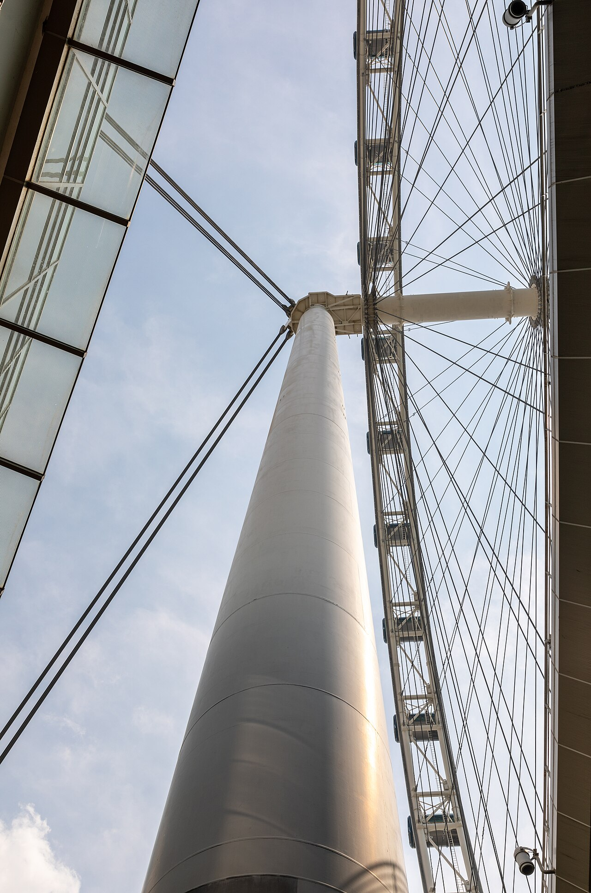
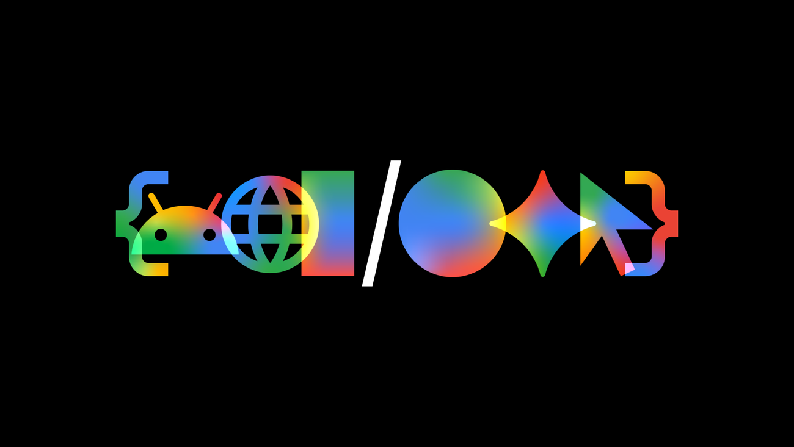
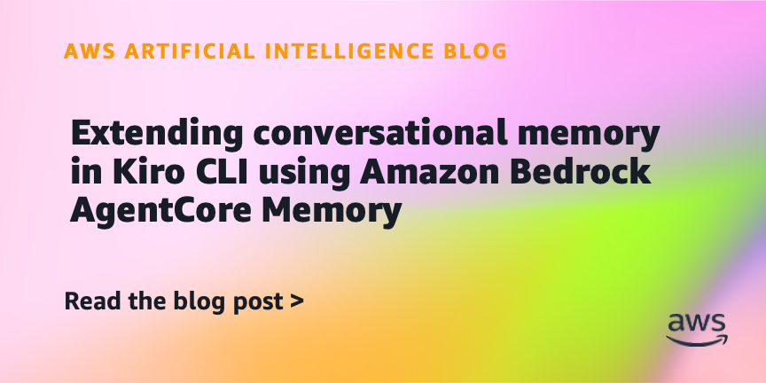
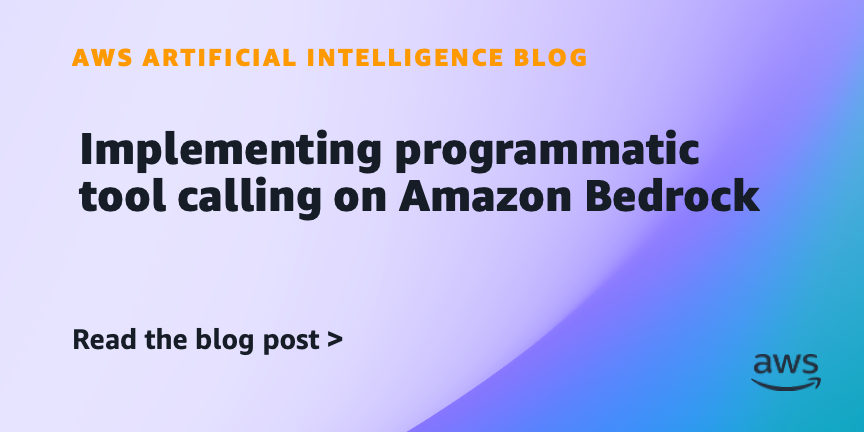
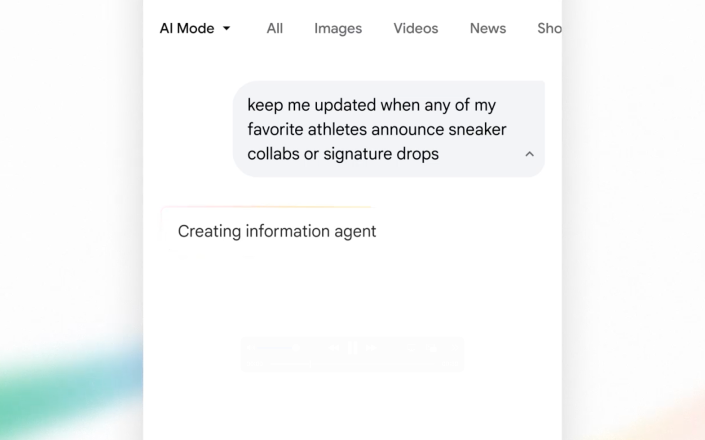
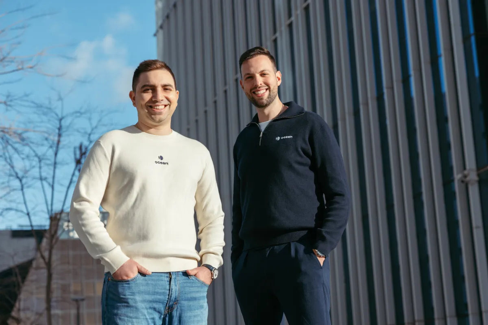
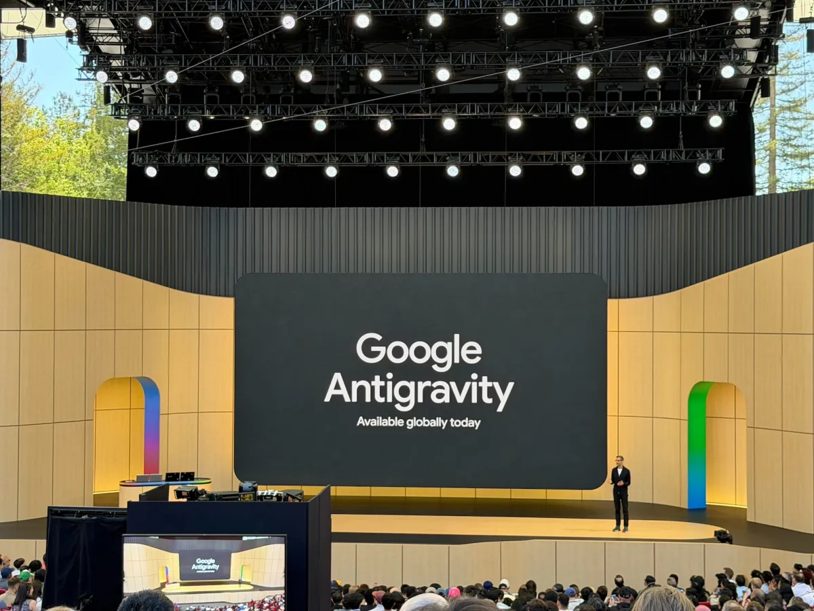
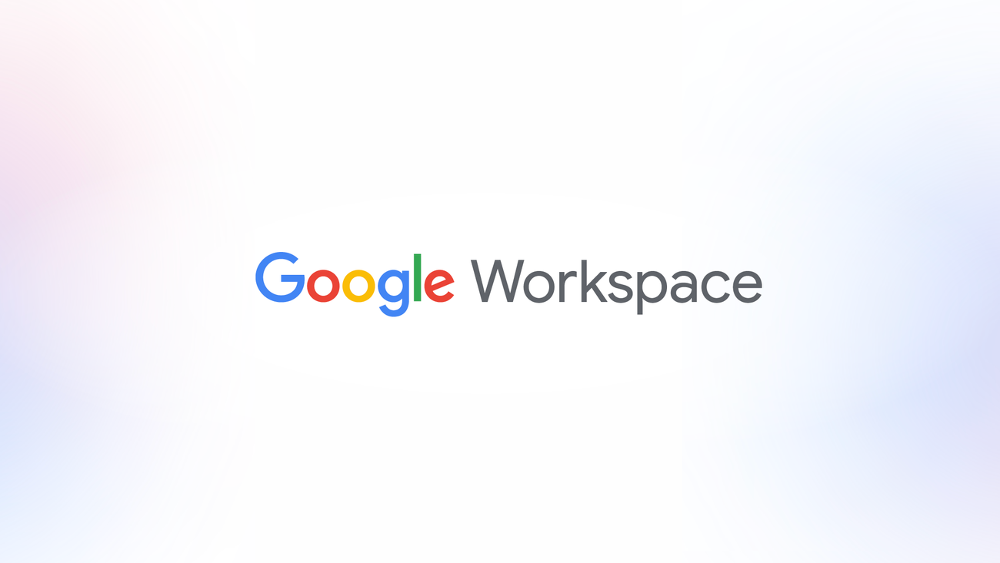

Gemini出现智能体能力新进展
原文：I/O 2026: Welcome to the agentic Gemini eraGoogle AI这条围绕Gemini展开，重点看它是否把智能体从演示带到更具体的任务入口。
Gemini这条要看细节，真正有用的部分藏在功能边界和接入门槛里。
原文Singapore先把今天的注意力拉住；OpenAI补上另一条线索。今天先看这些具体产品怎么动。
今天值得看的对象是Singapore、OpenAI、合作、Gemini：它们分别牵出合作、智能体能力、记忆扩展，重点不在声量，而在这些产品和评测会怎样改变具体使用路径。


Gemini的智能体能力Google AI这条围绕Gemini展开，重点看它是否把智能体从演示带到更具体的任务入口。
Gemini出现智能体能力新进展 · Google AI
Amazon Bedrock AgentCore Memory的记忆扩展AWS这条新闻的具体对象是Amazon Bedrock AgentCore Memory，动作是记忆扩展；原文线索是「Extending conversational memory in Kiro CLI using Amazo....
Amazon Bedrock AgentCore Memory加入对话记忆 · AWS Machine Learning BlogThe Verge 报道马斯克对 Sam Altman 和 OpenAI 的案件受挫，法律结果暂时落定，但 AI 公司治理争议仍会继续。
马斯克败诉，OpenAI 争议还没结束 · TechCrunch AIOpenAI这条新闻的具体对象是Singapore，动作是合作；原文线索是「Introducing OpenAI for Singapore」。
VentureBeat这条新闻的具体对象是search box，动作是合作；原文线索是「Google just redesigned the search box for the first tim...」。

AWS Machine Learning Blog · businessAmazon Bedrock AgentCore补上程序化工具调用AWS这条新闻的具体对象是Amazon Bedrock AgentCore，动作是工具调用；原文线索是「Implementing programmatic tool calling on Amazon Bedrock」。

TechCrunch AI · businessAI agents正在改写搜索入口TechCrunch报道的重点是AI agents：搜索正在从“输入关键词”转向更主动的 AI 入口，原文线索是「How to use Google’s new AI agents to go beyond your sta...」。

TechCrunch AI · businessAI phishing拿到融资，押注AI 安全TechCrunch报道AI phishing拿到资金，说明投资人押注的不是 AI 口号，而是更具体的安全或产品问题。

TechCrunch AI · businessAntigravity 2.0出现开发工具升级新进展TechCrunch把Antigravity 2.0放在开发工具语境里，关键不是概念，而是 CLI、编码流程和实际接入方式是否变顺。

Google AI · modelsGoogle Workspace开始生成内容Google AI把Google Workspace放进生成场景，关键是生成结果能否被编辑、追溯和稳定使用。
Google AI这条围绕Gemini展开，重点看它是否把智能体从演示带到更具体的任务入口。
Gemini这条要看细节，真正有用的部分藏在功能边界和接入门槛里。
原文AWS这条新闻的具体对象是Amazon Bedrock AgentCore Memory，动作是记忆扩展；原文线索是「Extending conversational memory in Kiro CLI using Amazo....
Amazon Bedrock AgentCore Memory补记忆这事很实在，智能体没上下文就像刚睡醒的同事。
原文AWS这条新闻的具体对象是Amazon Bedrock AgentCore，动作是工具调用；原文线索是「Implementing programmatic tool calling on Amazon Bedrock」。
Amazon Bedrock AgentCore开始认真处理工具调用，说明智能体终于要学会按流程干活。
原文TechCrunch报道的重点是AI agents：搜索正在从“输入关键词”转向更主动的 AI 入口，原文线索是「How to use Google’s new AI agents to go beyond your sta...」。
AI agents这事不小，搜索框一变，很多流量游戏就要重新算账。
原文TechCrunch报道AI phishing拿到资金，说明投资人押注的不是 AI 口号，而是更具体的安全或产品问题。
AI phishing拿到钱只是开场，接下来要证明它不是又一个安全 PPT。
原文VentureBeat这条新闻的具体对象是search box，动作是合作；原文线索是「Google just redesigned the search box for the first tim...」。
search box这条要看细节，真正有用的部分藏在功能边界和接入门槛里。
原文TechCrunch报道audio-powered smart glasses的新功能或版本，原文线索是「Google takes a page out of Meta’s book, announces...」，重点...
audio-powered smart glasses这类发布不缺声量，缺的是用户第二天还会不会打开。
原文TechCrunch提到AI design的视觉识别能力，真正要看的是它在真实环境里能否稳定读懂场景。
AI design这条要看细节，真正有用的部分藏在功能边界和接入门槛里。
原文TechCrunch把Antigravity 2.0放在开发工具语境里，关键不是概念，而是 CLI、编码流程和实际接入方式是否变顺。
Antigravity 2.0如果真能少敲几步命令，开发者会比发布会掌声更诚实。
原文TechCrunch写到Universal Cart，意思是 AI 不只推荐商品，还可能进入跨站购物流程，风险和便利都会一起出现。
Universal Cart听起来方便，但让 AI 花钱这件事，最好先问清楚谁背锅。
原文Google AI把Google Workspace放进生成场景，关键是生成结果能否被编辑、追溯和稳定使用。
Google Workspace这条要看细节，真正有用的部分藏在功能边界和接入门槛里。
原文TechCrunch报道 Andrej Karpathy 加入 Anthropic 预训练团队，这条的重点是顶级模型训练经验继续向头部实验室集中。
Karpathy 换位置，比很多产品更新更值得看，因为模型能力最后还是人训出来的。
原文Google AI这条指向Google AI subscriptions的订阅变化，用户真正要看的是哪些能力被打包、哪些功能需要额外付费。
Google AI subscriptions这条要看细节，真正有用的部分藏在功能边界和接入门槛里。
原文The Verge 报道马斯克对 Sam Altman 和 OpenAI 的案件受挫，法律结果暂时落定，但 AI 公司治理争议仍会继续。
马斯克输了这一局，但 OpenAI 的治理故事不会因此安静。
原文